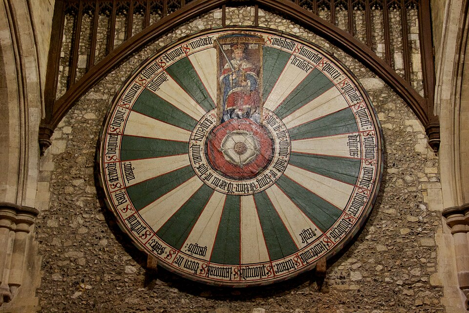
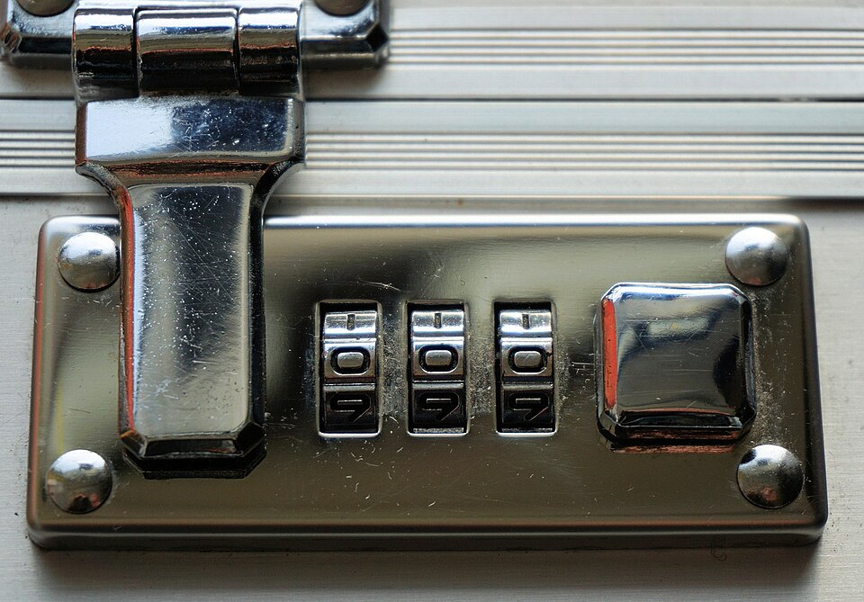
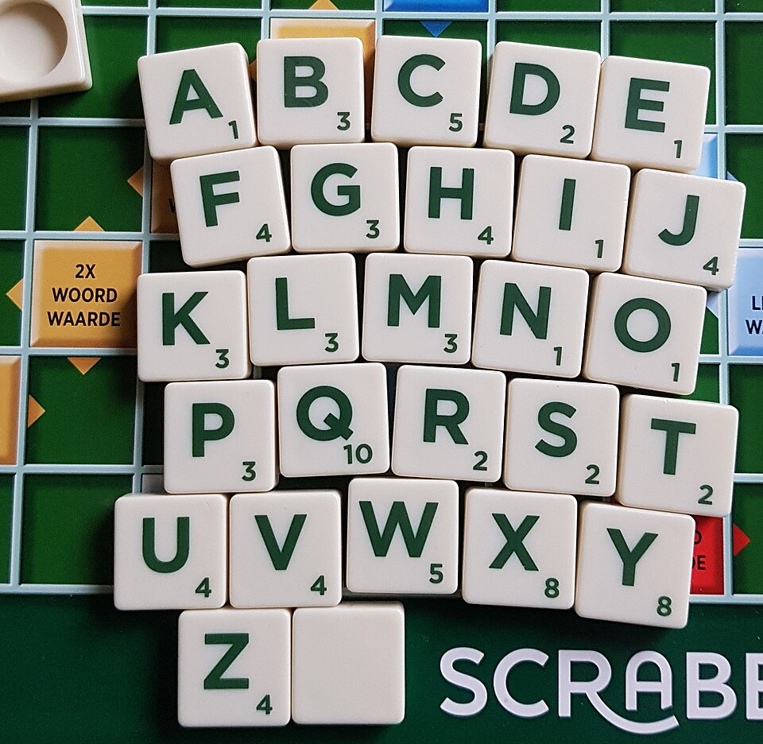
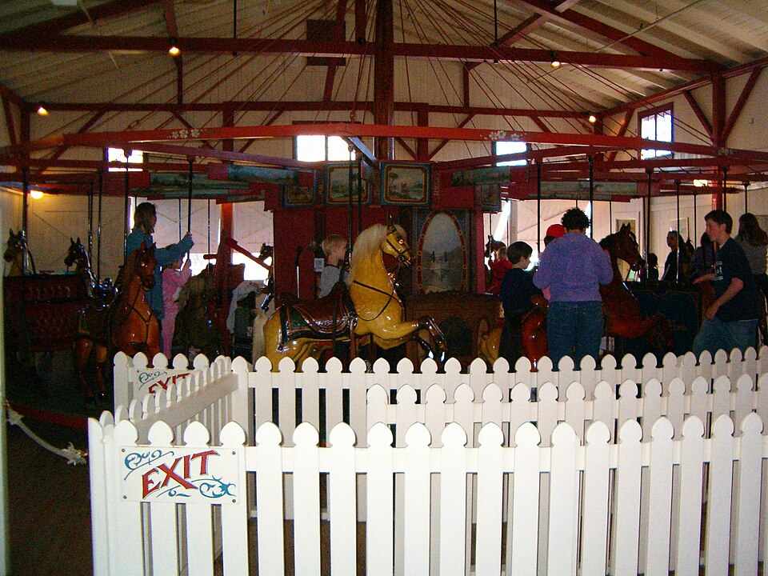
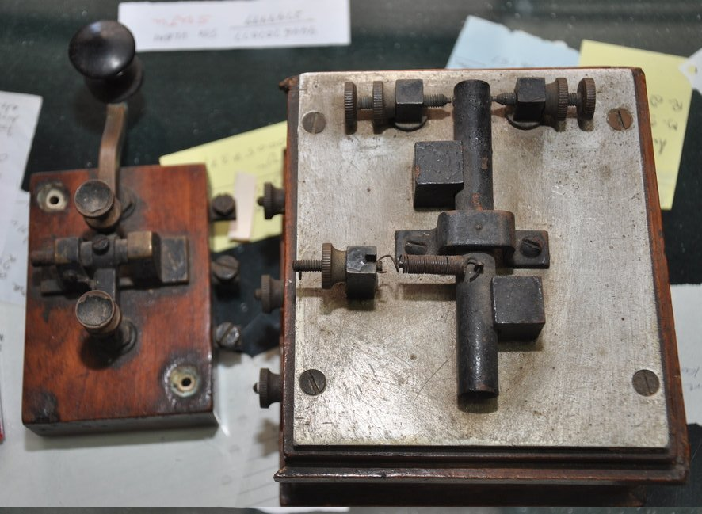
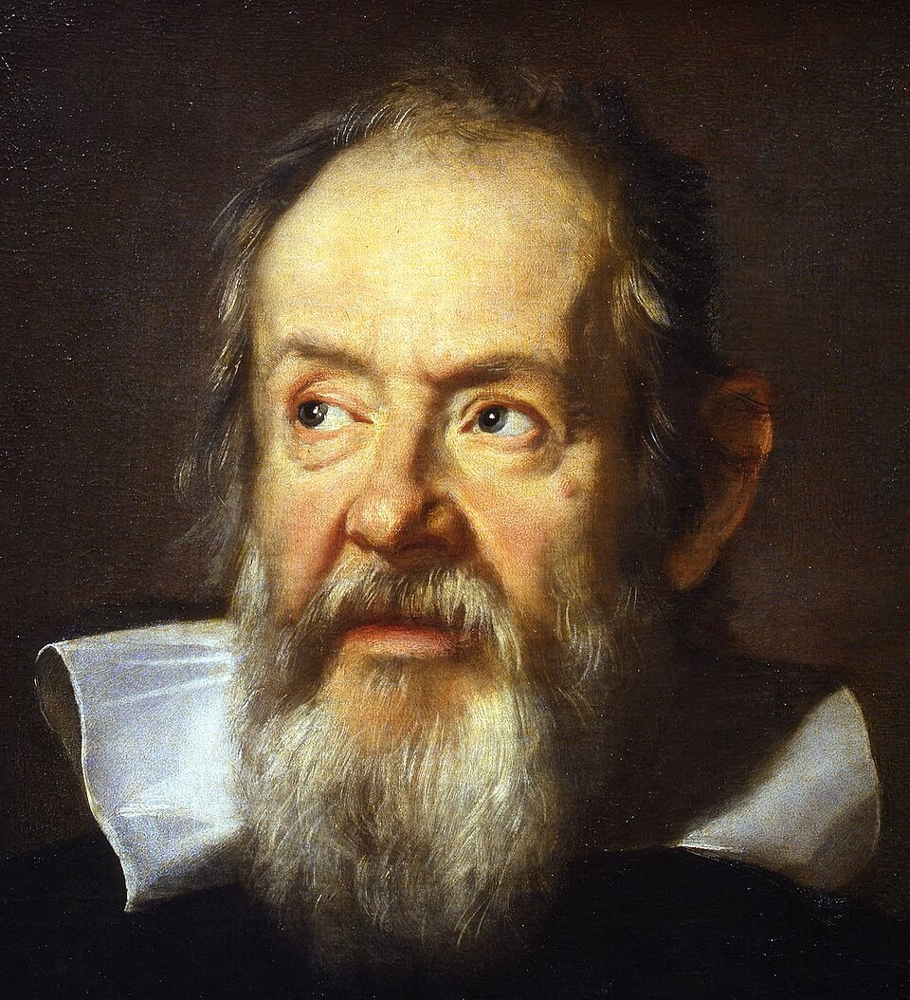
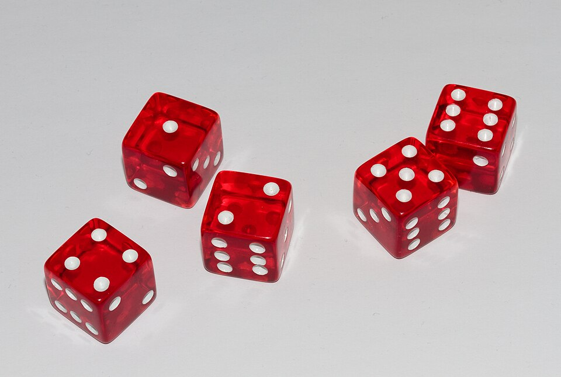

원순열 · 중복순열 · 같은 것이 있는 순열
교과서 Ⅰ-1 순열과 조합 (10~17쪽)
→ / Space 다음 · ← 이전 · F 전체 화면
① 원탁에 둘러앉는
방법은 몇 가지?

② 여행 가방 자물쇠의
비밀번호는 몇 개?

③ BANANA의 글자를 섞으면
몇 가지가 나올까?
서로 다른 깃발 5개를 일렬로 나열하는 방법은?
5 × 4 × 3 × 2 × 1 = 5! = 120
전설 속 아서왕은 기사들 사이에 높고 낮은 자리가 생기지 않도록 둥근 탁자를 만들었다고 합니다.
▲ 표시한 자리부터 시계 방향으로 읽으면
한 줄로 읽으면 4가지지만 원탁 위에서는 모두 같은 배열입니다.

노란 말(A)을 기준으로 잡고 나머지가 그 뒤에 어떤 순서로 오는지만 보면 됩니다.
서로 다른 n개를 원형으로 배열하는 원순열의 수는
| n | 일렬 n! | 원형 (n−1)! |
|---|---|---|
| 3 | 6 | 2 |
| 4 | 24 | 6 |
| 5 | 120 | 24 |
| 6 | 720 | 120 |
회장·부회장을 포함한 5명이 원탁에 둘러앉을 때
(4−1)! = 3! = 6
묶음 안에서 두 사람이 자리를 바꾸는 경우 2! = 2
6 × 2 = 12
할머니와 할아버지를 포함한 가족 6명이 원형 식탁에 둘러앉는다.
⑴ 6명이 앉는 경우의 수
⑵ 할머니와 할아버지가 마주 보고 앉는 경우의 수
정팔각형 구절판(가운데 1칸 + 둘레 8칸)에 서로 다른 간식 9가지를 담는 방법은?
(회전하여 일치하면 같은 것)
세 자리 비밀번호. 각 자리에 0~9 중 아무 숫자나.
예: 007, 112, 999 …
다이얼을 클릭하면 한 칸씩 돌아갑니다
10 × 10 × 10 = 103 = 1000
5P3 = 60 (쓴 것은 빠진다)
5Π3 = 53 = 125 (매번 다시 5개)
서로 다른 n개에서 중복을 허용하여 r개를 택하는 중복순열의 수
학생 4명이 방과후 활동으로 농구·야구·축구 중 하나씩 고른다. (교과서 24쪽 08번)
지금까지 나온 서로 다른 결과: 0가지
중복을 허용할 때, 네 자리 자연수는 몇 개?
3 × 64 = 192
해 보기: a, b, c, d, e, f 중 3개를 택하는 중복순열 중 자음으로 시작하는 것은? (답: 4 × 62 = 144)

a 3개, b 2개를 일렬로 나열하는 방법은?
5!3! × 2! = 12012 = 10
aaabb aabab aabba abaab ababa
abbaa baaab baaba babaa bbaaa
n개 중에서 서로 같은 것이 각각 p개, q개, …, r개씩 있을 때, 일렬로 나열하는 순열의 수는
어떤 최단 경로든 → 4번, ↑ 2번.
길 = 화살표 6개를 나열하는 순서!
6!4! × 2! = 15가지

“주사위 3개의 합이 9인 조합도, 10인 조합도 6가지씩인데 왜 10이 더 자주 나오나요?”
| 합 9 | 경우 | 합 10 | 경우 |
|---|---|---|---|
| (1,2,6) | 3! = 6 | (1,3,6) | 6 |
| (1,3,5) | 6 | (1,4,5) | 6 |
| (2,3,4) | 6 | (2,3,5) | 6 |
| (1,4,4) | 3!/2! = 3 | (2,2,6) | 3 |
| (2,2,5) | 3 | (2,4,4) | 3 |
| (3,3,3) | 1 | (3,3,4) | 3 |
| 합계 | 25 | 합계 | 27 |
막대: 실험 상대도수 · 점선: 이론값 (경우의 수 ÷ 216)

던진 횟수: 0
합 9: 0
이론 25/216 ≈ 11.6%
합 10: 0
이론 27/216 ≈ 12.5%
| 종류 | 비유 | 핵심 아이디어 | 순열의 수 |
|---|---|---|---|
| 원순열 | 원탁 · 회전목마 | 한 명을 고정한다 | (n−1)! |
| 중복순열 | 자물쇠 다이얼 | 자리마다 n가지 그대로 | nΠr = nr |
| 같은 것이 있는 순열 | 모스 부호 · 이름표 | 구별했다가 겹친 만큼 나눈다 | n!p!q!⋯r! |
| 번호 | 문제 | 답 |
|---|---|---|
| 01 | 정팔각형 탁자에 8명이 둘러앉는 경우의 수 | 7! = 5040 |
| 02 | 1~5 중 중복을 허용하여 만드는 세 자리 자연수의 개수 | 5Π3 = 125 |
| 03 | a, a, b, b, b, c를 일렬로 나열하는 경우의 수 | 6!/(2!3!) = 60 |
| 07 | 6명이 원형으로 설 때 A와 B가 이웃하는 경우의 수 | 4! × 2! = 48 |
| 10 | success의 7개 문자를 모음끼리 이웃하게 나열하는 경우의 수 | 6!/(3!2!) × 2! = 120 |
순서는 상관없고 중복은 허용될 때는? nHr를 배웁니다.
각 이미지의 원본 주소와 라이선스는 이미지 폴더의 출처.json에 있습니다. 문제와 예제는 미래엔 『확률과 통계』 교과서를 참고했습니다.